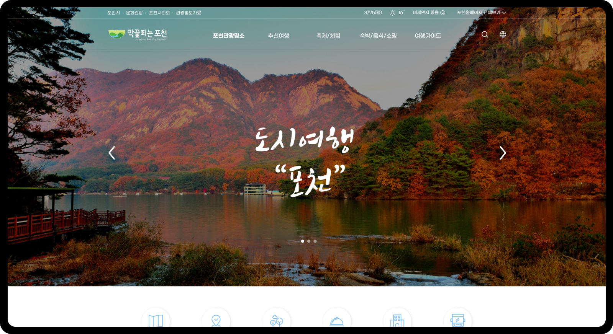
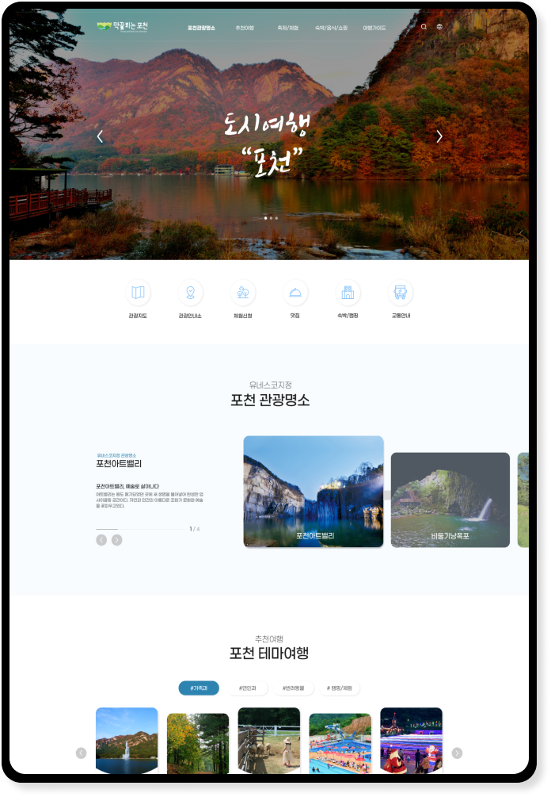
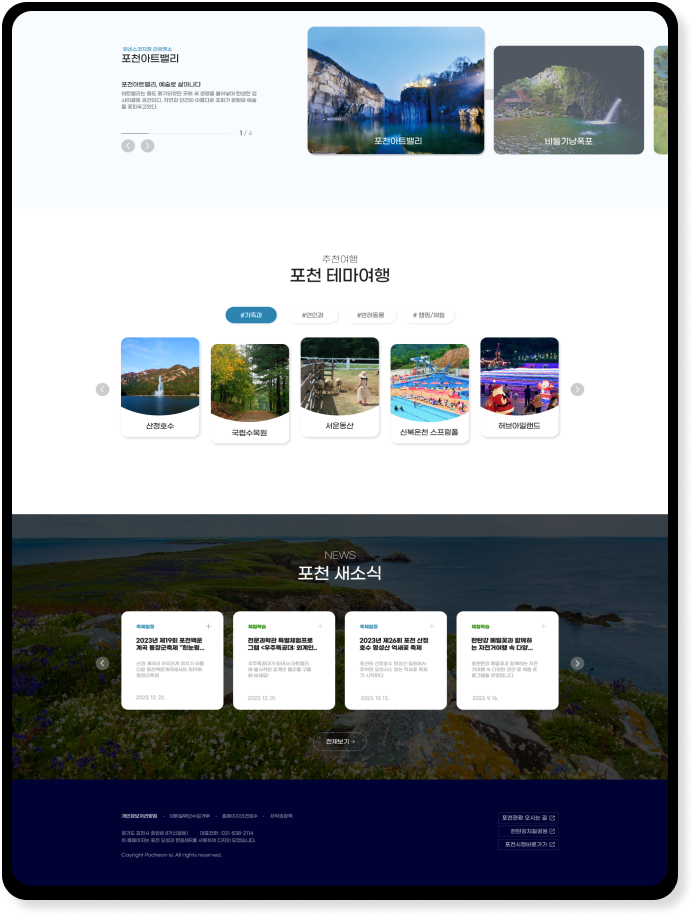
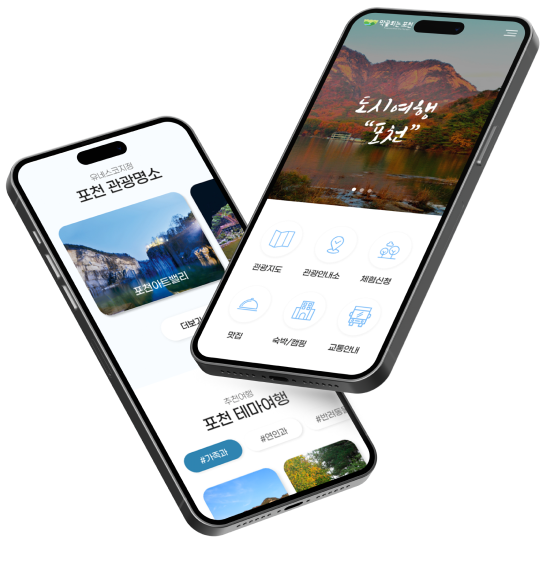

Pocheon Culture Tourism
UI.UX WebDesign
02포천문화관광(반응형)리뉴얼 설계&구현
포천문화관광지는 각종 체험과 캠핑,그린뷰 등 자연과 함께 힐링할 공간이 많이 준비된 문화관광지로서 여행을 좋아하며 사랑하는 가족,연인,반려동물과 함께할 수 있는 힐링 여행에 초점을 두고 기존에 많은 정보를 눈에 보기쉽게 재배치 목표로 기획했습니다.

02

개선방향 & UI.UX
기존 포천문화관광지 홈페이지에서 제일 먼저 보이는 visual 팝업 구간에 여러 사진을 겹쳐있다보니 한눈에 보이지 않는다는 점과 영역을 나눴으나 정확히 무엇을 전달하고 싶은지 파악하기 어려운 많은 콘텐츠들이 방문고객 입장에서 다소 접근하기 어렵다고 느껴졌습니다. 그래서 최대한 많은정보를 보기쉽게 구성하고자 각 콘텐츠별로 좌우 슬라이드와 적절한 여백감을 주어 재배치하였으며 문화관광지인만큼 포천의 예쁜풍경 이미지를 팝업에 배치하도록 기획했습니다.

03


Typography & Color
Basics
Prenendard M,B
Point
Korail Round Gothic B
#2E84B1
#000233
#F8FCFF
디자인 100%
코딩 100%
작업기간 : 2024. 03. 25. ~ 31.